가스기사 (2007-03-04 기출문제)
1과목: 가스유체역학
1. 유체엔진 및 터빈의 효율을 정의한 것은?
- 최선의장치가 작업을 하는데 필요한 일/장치에서 실제로 필요한일
- 유용한 일/전체 일
- 실제로 전달한 일/가능한 최대일
- 전체 일/유용한일
(정답률: 48%)

2. 뉴턴의 점성법칙과 관련 있는 항끼리 짝지어진 것은?
- 압력 온도 전단응력
- 동점성계수, 속도구배, 압력
- 동점성계수, 온도, 전단응력
- 점성계수, 속도구배, 전단응력
(정답률: 69%)
3. 30℃의 물이 내경이 10㎝인 관속을 흐를 때 층류로 흐르기 위한 임계속도는 몇 ㎝인가? (단, 30℃에서 물의 점도는 0.01g/㎝.s이고 Nʀe는 2100이다.)
- 0.21
- 2.1
- 4.2
- 21
(정답률: 63%)
4. 하겐-포아즐리 식이 유도될 때 설정된 가정과 가장 거리가 먼 것은?
- 비압축성 유체의 층류흐름
- 압축성 유체의 난류흐름
- 밀도가 일정한 뉴톤성 유체의 흐름
- 원형관 내에서의 정상상태흐름
(정답률: 58%)
5. 게이트 밸브의 일반적인 특징을 설명한 것으로 옳은 것은?
- 섬세한 유량조절이 힘들다
- 가정에서 사용하는 수도꼭지와 같다
- 대개 유체의 흐름과 평행한 방향으로 움직이는 문을 열고 닫는다.
- 대개 완전히 열거나 닫을 수 없다.
(정답률: 69%)
6. SI 단위계에서의 중력 전환계수 gc에 해당하는 것은?
- 1N·m/kg·s3
- 9.8kg·m/N·m2
- 1kg·m/N·s3
- 9.8N·m/kg·s3
(정답률: 37%)
7. 원심 펌프가 높은 능력으로 운전되는 경우 임펠러 흡입부의 압력이 유체의 증기압보다 낮아지면 흡입부의 유체는 증발하게 되며 이 증기는 임펠러의 고압부로 이동하여 갑자기 응축하게 된다. 이러한 현상을 무엇이라 하는가?
- 캐비테이션
- 펌핑
- 디츄젼링
- 에어 바인딩
(정답률: 87%)
8. 온도 20℃, 압력 5kgf/cm2인 이상기체 10cm2를 등온조건에서 5cm2까지 압축시키면 압력은 몇 kgf/cm2인가?
- 2.5
- 5
- 10
- 20
(정답률: 79%)
9. 항력에 대한 설명 중 틀린 것은?
- 유체가 흐를 때 접촉면에 작용하는 힘이다.
- 총항력＝마찰항력＋압력항력으로 나타낼 수 있다
- 원통관 내의 거칠기에만 의존하는 힘이다.
- 압력항력은 표면에 수직으로 작용하는 힘이다.
(정답률: 74%)
10. N2가 27℃에서 100Kpa에 있다. 이 기체의 밀도는 약 몇 Kg/m3인가?
- 0.245
- 0.457
- 1.123
- 1.945
(정답률: 71%)
11. 관에서의 마찰계수 f에 대한 일반적인 설명으로 옳은 것은?
- 레이놀즈수와 상대조도의 함수이다.
- 마하수와의 함수이다.
- 점성력과는 관계가 없다.
- 관성력만의 함수이다.
(정답률: 71%)
12. 다음 중 대기압을 측정하는 계기는 무엇인가.
- 수은 기압계
- 오리피스미터
- 로타미터
- 둑(weir)
(정답률: 90%)
13. 운동 부분과 고정부분이 밀착되어 있어서 배출공간에서부터 흡입공간으로의 역류가 최소화 되며, 경질윤활유와 같은 유체수송에 적합하고 배출압력을 200atm 이상 얻을 수 있는 펌프는?
- 왕복펌프
- 회전펌프
- 원심펌프
- 격막펌프
(정답률: 67%)
14. 원관 내를 물이 층류로 흐를 경우에 대한 설명 중 틀린 것은?
- 평균유속은 V＝1/2×(최대유속)
- 운동에너지 보정계수 α＝0.5
- 유량은 반지름의 네제곱에 비례함
- 마찰계수 f＝16·NRe
(정답률: 67%)
15. 다음 중 체적탄성 계수에 대한 설명으로 잘못된 것은? (단, K는 비열비이다.)
- 유체의 압축성에 반비례한다.
- 압력과 동일한 차원을 갖는다.
- 압력과 점성에 무관하다.
- 단열변화에서는 체적탄성계수 K＝kP의 관계가 있다.
(정답률: 65%)
16. 관속 흐름에서 임계레이놀즈수를 2100으로 할 때 지름 1㎝인 관에 20℃의 물이 흐르는 경우의 임계속도는? (단, 20℃의 물의 동점성계수는 ν＝1.01×10-6㎨이다.)
- 0.21㎧
- 0.42㎧
- 2.1㎧
- 21.1㎧
(정답률: 54%)
17. 그림과 같은 관에서 유체가 등엔트로피 유동할 때 마하수 Ma＜1이라 한다. 이때 압력과 속도의 변화를 바르게 나타낸 것은? (단, 압력은 P, 속도는 V이다.)
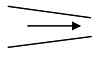
- V : 증가 P : 감소
- V : 증가, P : 감소
- V : 감소 P : 감소
- V : 감소 P : 증가
(정답률: 65%)
18. 다음 중 등엔트로피 과정에 대한 설명으로 옳은 것은?
- 가역단열과정이다.
- 가역등온과정이다.
- 마찰이 있는 등온과정이다.
- 마찰이 없는 비가역과정이다.
(정답률: 71%)
19. 단면이 매우 큰 저장탱크로부터 7.5㎝인 관을 통하여 1㎧의 속도로 비중 1.84인 용액을 10m 상부에 있는 저장탱크로 올리려고 한다. 전체 계에 걸친 마찰에 의한 손실은 3kgf m/kg이다. 펌프가 이루는 압력(kgf/cm2)은 약 얼마인가?
- 2.4
- 4.2
- 5.1
- 7.1
(정답률: 36%)
20. 원관 내 유체의 흐름에 대한 다음 설명 중 틀린 것은?
- 일반적으로 층류는 레이놀즈수가 약 2100 이하인 흐름이다.
- 일반적으로 난류는 레이놀즈수가 약 4000 이상인 흐름이다.
- 일반적으로 관중심부의 유속은 평균유속보다 크다.
- 일반적으로 최대유속에 대한 평균속도의 비는 난류가 층류보다 작다.
(정답률: 83%)
2과목: 연소공학
21. 포화증기를 일정 체적하에서 압력을 상승시키면 어떻게 되는가?
- 포화액이 된다.
- 압축액이 된다.
- 과열증기가 된다.
- 습증기가 된다.
(정답률: 88%)
22. 15℃의 공기 1kg을 부피 1/4로 압축할 경우 등온 압축에서의 소요일량은 몇 kg·m인가? (단, 공기의 기체상수는 29.3kg·m/kg·K이다.)
- 265
- 610
- 5080
- 11700
(정답률: 56%)
23. 프로판가스 1L를 완전연소하는데 필요한 이론산소량은 약 몇 g인가?
- 3
- 5
- 7
- 9
(정답률: 65%)
24. 확산화염의 연소방식에 대한 설명 중 틀린 것은?
- 연소생성물은 화염면의 양측면으로 확산됨에 따라 없어진다.
- 연료와 산화제의 경계면이 생겨 서로 반대 측면에서 경계면으로 연료와 산화제가 확산해 온다.
- 가스라이터의 연소는 전형적인 기체연료의 확산화염이다.
- 연료와 산화제가 적당 비율로 혼합되어 가연혼합기를 통과할 때 확산 화염이 나타난다.
(정답률: 48%)
25. 카르노 냉동 사이클에서 냉동기의 성적계수(w)를 옳게 나타낸 것은? (단, TA : 냉동유지온도, TB : 열방출온도이다.)
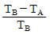
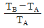
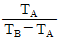
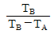
(정답률: 67%)
26. 다음 중 액체연료의 연소형태가 아닌 것은?
- 액면연소
- 분해연소
- 분무연소
- 등심연소
(정답률: 87%)
27. 가스화재 시 밸브 및 콕크를 잠그는 경우는 어떤 소화인가?
- 질식소화
- 제거소화
- 냉각소화
- 억제소화
(정답률: 88%)
28. 프로판 가스 1Nm3을 완전연소시켰을 때 건조연소가스량은 약 몇 Nm3인가? (공기 중의 산소는 21v%이다.)
- 10
- 16
- 22
- 30
(정답률: 67%)
29. 공기와 연료의 혼합기체의 표시에 대한 설명 중 옳은 것은?
- 공기비는 연공비의 역수와 같다.
- 연공비라 함은 가연 혼합기중의 공기와 연료의 질량비로 정의된다.
- 공연비라 함은 가연 혼합기중의 연료와 공기의 질량비로 정의된다.
- 당량비는 실제의 연공비와 이론 연공비의 비로 정의된다.
(정답률: 63%)
30. 폭발의 위험도 (H)를 옳게 표현한 것은? (단, U : 폭발상한값, L : 폭발하한값이다.)
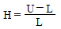
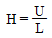
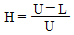
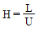
(정답률: 71%)
31. 고체연료를 사용하는 어느 열기관의 출력이 300kW이고 연료소비율이 매시간 1400kg일 때 이 열기관의 열효율은 약 몇 %인가? (단, 이 고체연료의 저위 발열량은 28MJ/kg이다.)
- 28
- 32
- 36
- 40
(정답률: 40%)
32. TNT 당량은 어떤 물질이 폭발할 때 방출하는 에너지와 동일한 에너지를 방출하는 TNT의 질량을 말한다. LPG 3톤이 폭발할 때 방출하는 에너지는 TNT당량으로 몇 kg인가? (단, 폭발한 LPG의 발열량은 15000kcal/kg이며, LPG의 폭발계수는 0.1TNT가 폭발 시 방출하는 당량에너지는 1125kcal이다.)
- 3500
- 4000
- 4500
- 5000
(정답률: 73%)
33. 열역학 특성식으로 P1V1n＝P2V2n이 있다. 이때 n 값에 따른 상태변화를 옳게 나타낸 것은? (단, k는 비열비이다.)
- n＝0 : 등온
- n＝1 : 단열
- n＝±∞ : 정적
- n＝k : 등압
(정답률: 65%)
34. 난류예혼합화염과 층류예혼합화염의 특징을 비교 설명한 것 중 옳지 않은 것은?
- 난류예혼합화염의 연소속도는 층류예혼합화염의 연소속도보다 빠르다.
- 난류예혼합화염의 휘도는 층류예혼합화염의 휘도보다 낮다.
- 난류예혼합화염은 다량의 미연소분이 잔존한다.
- 난류예혼합화염의 두께가 층류예혼합화염의 두께보다 크다.
(정답률: 73%)
35. -193.8℃ 5atm의 질소기체를 200atm으로 단열압축했을 때의 온도는 약 몇℃인가? (단, 비열비 k＝1.41이고 이상기체로 간주한다.)
- -35℃
- -15℃
- 25℃℃
- 30℃
(정답률: 75%)
36. 다음 가연성 가스 및 증기 중 최소 착화에너지 값이 가장 작은 것은?
- 메탄
- 암모니아
- 에틸렌
- 이황화탄소
(정답률: 64%)
37. 공기 29kg과 수증기 36kg을 혼합하여 30m3의 탱크 안에 넣었다. 지금 혼합기체의 온도를 77℃로 할 때 탱크의 압력은?
- 0.96atm
- 1.91atm
- 2.57atm
- 2.87atm
(정답률: 53%)
38. 연소할 때의 실제 공기량 A와 이론공기량의 Ao 사이는 A＝mAo의 등식이 성립된다. 이식에서 m이란?
- 과잉공기계수
- 연소효율
- 공기압력계수
- 공기의 열전도율
(정답률: 75%)
39. 다음 연소범위에 대한 설명 중 옳은 것은?
- N2를 가연성가스에 혼합하면 연소범위는 넓어진다.
- CO2를 가연성가스에 혼합하면 연소범위가 넓어진다.
- 가연성가스는 온도가 일정하고 압력이 내려가면 연소범위가 넓어진다.
- 가연성가스는 온도가 일정하고 압력이 올라가면 연소범위가 넓어진다.
(정답률: 90%)
40. 증기운폭발(VCE)에 대한 설명 중 틀린 것은?
- 증기운의 크기가 증가하면 점화확률이 커진다.
- 증기운에 의한 재해는 폭발보다는 화재가 일반적이다.
- 폭발효율이 커서 연료에너지의 전부가 폭풍파로 전환된다.
- 방출점으로 부터 먼 지점에서의 증기운의 점화는 폭발의 충격을 증가시킨다.
(정답률: 71%)
3과목: 가스설비
41. 펌프의 이상현상에 대한 설명 중 틀린 것은?
- 수격작용이란 유속이 급변하여 심한 압력변화를 갖게 되는 작용이다.
- 서징의 방지법으로 유량조절밸브를 펌프 송출측 직후에 배치시킨다.
- 캐비테이션 방지법으로 관경과 유속을 모두 크게 한다.
- 베이퍼록은 저비점 액체를 이송시킬 때 입구 쪽에서 발생되는 액체비등이다.
(정답률: 72%)
42. 고압가스의 분출시 정전기가 가장 발생하기 쉬운 경우는?
- 다성분의 혼합가스인 경우
- 가스이 분자량이 작은 경우
- 가스가 건조해 있을 경우
- 가스 중에 액체나 고체의 미립자가 섞여있는 경우
(정답률: 56%)
43. 도시가스 공급설비에서 저압배관 부분의 압력손실을 구하는 식은? (단, H : 기점과 종점과의 압력차가 [mmHg] Q : 가스유량 [m3/hr] D : 구경[㎝], S : 가스의 비중 L : 배관길이 [m] K : 유량계수이다.)
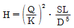
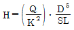
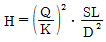
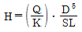
(정답률: 69%)
44. 겨울철 LPG 용기에 서릿발이 생겨 가스가 잘 나오지 않을 때 가스를 사용하기 위한 조치로 옳은 것은?
- 용기를 힘차게 흔들다.
- 연탄불로 쪼인다.
- 40℃ 이하의 열습포로 녹인다.
- 90℃ 정도의 물을 용기에 붓는다.
(정답률: 73%)
45. 펌프의 송출유량이 Q[m3/min] 양정이 H[m] 취급하는 액체의 비중량이 r[kg/m3]일 때 펌프 수둥력을 구하는 식은?
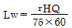
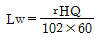
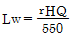
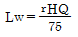
(정답률: 69%)
46. 냉동톤은 0℃ 물 1톤을 24시간 동안 0℃ 얼음으로 냉동시키는 능력으로 정의된다. 1냉동톤(RT)를 환산하면 몇 ㎉/h가 되겠는가?
- 332
- 3320
- 2241
- 22410
(정답률: 83%)
47. 수소화염 또는 산소아세틸렌 화염을 사용하는 시설 중 분기되는 각각의 배관에 반드시 설치해야 하는 장치는?
- 역류방지장치
- 역화방지장치
- 긴급이송장치
- 긴급차단장치
(정답률: 77%)
48. 바닥물과 LNG를 열교환하여 LNG를 기화하는 방식의 기화기로써 해수를 열원으로 하기 때문에 운전비용이 저렴하여 기저부하용으로 주로 사용하는 기화기는?
- 오픈랙기화기
- 서브머지드기화기
- 중간매체식기화기
- 간접가열식기화기
(정답률: 83%)
49. 기화징치의 검사에 대한 설명 중 옳지 않은 것은?
- 압력계의 최고 눈금은 상용압력의 1.5배 내지 2배 이하일 것
- 안전장치는 내압시험의 8/10 이하의 압력에서 작용할 것
- 기밀시험은 상용압력 이상의 압력으로 행하여 누출이 없을 것
- 내압시험은 물을 사용하여 상용압력의 3배 이상으로 행할 것
(정답률: 79%)
50. 석유화학 공장 등에 설치되는 플레어 스택에서 역화 및 공기등과의 혼합폭발을 방지하기 위하여 가스 종류 및 시설구조에 따라 갖추어야 하는 것에 포함되지 않는 것은?
- Vaccum bhreaker
- Flame Arresstor
- Vaper Seal
- Molecular Seal
(정답률: 79%)
51. 다음. 부취제 주입방식 중 액체식 주입방식이 아닌 것은?
- 펌프주입식
- 적하주입식
- 워크식
- 미터연결바이패스식
(정답률: 85%)
52. 기화장치 중 LP 가스가 액체상태로 열교환기 밖으로 유출되는 것을 방지하는 장치는?
- 압력조정기
- 안전밸브
- 액면제어장치
- 열매온도제어장치
(정답률: 45%)
53. 암모니아 누출 시 검출방법이 아닌 것은?
- 특유의 냄새로 알 수 있다.
- 네슬러 시약을 투입 시 황색이 되고 암모니아가 많으면 적갈색이 된다.
- 적색 리트머스시험지를 청색으로 변화시킨다.
- 진한염산 유황 등의 접촉 시 검은 연기가 난다.
(정답률: 60%)
54. 다음 중 아세틸렌의 압축 시 분해폭발의 위험을 최소로 줄이기 위한 반응장치는?
- 접촉반응장치
- IG반응장치
- 겔로그반응장치
- 레퍼반응장치
(정답률: 56%)
55. 전양정이 14m인 펌프의 회전수를 1100rpm에서 1650rpm으로 변화시킨 경우 펌프의 전양정은 몇 m가 되는가?
- 21.5m
- 25.5m
- .31.5m
- 36.5m
(정답률: 56%)
56. LPG 용기에 대한 설명 중 틀린 것은?
- 안전밸브는 스프링식을 사용한다.
- 충전구는 왼나사이다.
- 무이음 용기이다.
- 용기의 색깔은 회색이다.
(정답률: 56%)
57. 가스 제조 시 사용되는 부취제의 구비조건이 아닌 것은?
- 독성이 없을 것
- 냄새가 잘날 것
- 물에 잘 녹을 것
- 관을 부식시키지 않을 것
(정답률: 79%)
58. 공기액화분리장치에서 이산화탄소 1kg을 제거하기 위해 필요한 NaOH는 몇 kg인가? (단, 반응율은 60%이고 NaOH의 분자량은 40이다.)
- 0.9
- 1.8
- 2.3
- 3.0
(정답률: 42%)
59. 가스 공급설비 설치를 위하여 지반조사 시 최대 토크 또는 모멘트를 구하기 위한 시험은?
- 표준관입시험
- 표준허용시험
- 베인시험
- 토질시험
(정답률: 88%)
60. 조정기의 감압방식 중 2단 감압방식에 대한 설명으로 틀린 것은
- 각 연소기에 알맞은 압력으로 공급이 가능하다.
- 배관입상에 의한 압력손실을 보정할 수 있다.
- 재액화가 불가능하여 폭발의 우려가 있다.
- 배관의 지름이 작아도 된다.
(정답률: 75%)
4과목: 가스안전관리
61. 고압가스 설비에 설치하는 안전장치중 가연성 가스 및 독성가스의 안전밸브 또는 파열판에는 무엇을 설치하여야 하는가?
- 가스방출관
- 플레어스택
- 긴급차단장치
- 인터록기구
(정답률: 53%)
62. 액화석유가스 이송 시 베이퍼록 현상을 방지하기 위한 방법으로 가장 적절한 것은?
- 흡입배관을 크게 한다.
- 토출배관을 크게 한다.
- 펌프의 회전수를 크게 한다.
- 펌프의 설치위치를 높인다.
(정답률: 57%)
63. 압력용기 및 저장탱크에 대한 용접부 기계시험의 항목이 아닌 것은?
- 이음매인장시험
- 표면굽힘시험
- 방사선투과시험
- 충격시험
(정답률: 67%)
64. 고압가스안전관리법의 적용을 받는 고압가스의 종류 및 범위에 대한 내용 중 옳은 것은? (단, 압력은 게이지압력이다.)
- 상용의 온도에서 압력이 1MPa 이상이 되는 압축가스로서 실제로 그 압력이 1MPa 이상이 되는 것 또는 섭씨 25도의 온도에서 압력이 1MPa 이상이 되는 압축가스(아세틸렌제외)
- 섭씨 35도의 온도에서 압력이 1Pa를 초과하는 아세틸렌가스
- 상용의 온도에서 압력이 0.1MPa 이상이 되는 액화가스로서 실제로 그 압력이 0.1MPa 이상이 되는 것 또는 압력이 0.1MPa이 되는 액화가스
- 섭씨 35도의 온도에서 압력이 0Pa를 초과하는 가스 중 액화시안화수소 액화브롬화메탄 및 액화산화에틸렌가스
(정답률: 59%)
65. 동암모니아 시약을 사용한 오르잣트법에서 산소의 순도는 몇 % 이상이어야 하는가?
- 95%
- 98.5%
- 99%
- 99.5%
(정답률: 50%)
66. 자동차용 용기의 충전시설 점검 시 충전용 주관의 압력계는 매월 몇 회 이상 그 기능을 검사하는가?
- 1회
- 2회
- 3회
- 4회
(정답률: 75%)
67. 냉동기의 냉매가스와 접하는 부분은 냉매가스의 종류에 따라 금속재료의 사용이 제한된다. 다음 중 사용 가능한 가스와 그 금속재료가 옳게 연결된 것은?
- 암모니아 : 동 및 동합금
- 염화메탄 : 알루미늄합금
- 프레온 : 2% 초과 마그네슘을 함유한 알루미늄합금
- 탄산 : 스테인레스강
(정답률: 77%)
68. 차량에 고정된 탱크에 의하여 고압가스를 운반할 때 설치하여야 하는 소화설비의 기준 중 틀린 것은?
- 가연성 가스는 분말소화제 사용
- 산소는 분말소화제 사용
- 가연성가스의 소화기 능력단위는 BC용, B-10이상
- 산소의 소하기 능력단위는 ABC용, B-12이상
(정답률: 69%)
69. 가스를 송출하는데 사용되는 밸브를 후면에 설치한 탱크에는 탱크주밸브 및 긴급차단장치에 속하는 밸브와 차량의 뒷범퍼와의 수평거리는 몇 ㎝이상 떨어져 있어야하는가?
- 20㎝
- 30㎝
- 40㎝
- 50㎝
(정답률: 84%)
70. 염소 염화수소 포스겐 아황산가스 등 액화독성가스의 누출에 대비하여 응급조치로 휴대하여야 하는 약제는?
- 소석회
- 가성소다
- 암모니아수
- 아세톤
(정답률: 75%)
71. 염소저장탱크 및 처리설비를 실내에 설치하려고 한다. 다음 설치기준 중 틀린 것은?
- 저장탱크실과 처리설비실은 각각 구분하여 설치하고 강제통풍시설을 갖출 것
- 저장탱크실 및 처리설비실은 천정 벽 및 바닥의 두께가 30㎝ 이상인 철근콘크리트실로 만든 실로서 방수처리가 된 것일 것
- 가연성가스 및 독성가스의 저장탱크실과 처리설비실에는 가스누출검지경보장치를 설치할 것
- 저장탱크의 정상부와 저장탱크의 천정과의 거리는 30㎝ 이상으로 할 것
(정답률: 58%)
72. 가스의 종류와 용기도색의 구분이 잘못된 것은?
- 액화암모니아 : 백색
- 액화염소 : 갈색
- 헬륨(의료용) : 자색
- 질소(의료용) : 흑색
(정답률: 53%)
73. 내용적이 25000l인 액화산소 저장탱크와 내용적이 3m3인 압축산소 용기가 배관으로 연결된 경우 총 저장능력은 약 몇 m3인가? (단, 액화산소 비중량은 1.14kg/L 35℃에서 산소의 최고충전압력은 15MPa이다.)
- 2818
- 2918
- 3018
- 3118
(정답률: 50%)
74. 액화염소 142kg을 기화시키면 표준상태에서 몇 L의 기체염소가 되는가? (단, 염소분자량 71)
- 11.2
- 22.4
- 44.8
- 56
(정답률: 58%)
75. 상용압력이 6MPa의 고압설비에서 안전밸브의 작동압력은?
- 4.8MPa
- 6.0MPa
- 7.2MPa
- 9.0MPa
(정답률: 60%)
76. 용기 제조에 대한 기준 중 틀린 것은?
- 이음매 없는 용기의 재료로 강을 사용할 경우에는 함유량이 각각 탄소 0.55% 이하, 인 0.04%이하 및 황 0.⑤% 이하이어야 한다.
- 스테인리스강, 알루미늄합금의 경우에는 용기의 재료로 사용할 수 있다.
- 내용적이 125L 미만인 LPG 용기를 강재로 제조하는 경우에는 KS D 3533(고압가스용기용 강판 및 강대)의 재료 또는 이와 동등 이상의 재료를 사용하여야 한다.
- 용기동판의 최대두께와 최소두께와의 차이는 평균두께의 10% 이하로 하여야 한다.
(정답률: 65%)
77. 아세틸렌 충전 시 아세틸렌을 몇 MPa 압력으로 압축하는 때에 질소 메탄 에틸렌 등의 희석제를 첨가하는가?
- 1
- 1.5
- 2
- 2.5
(정답률: 84%)
78. 압축천연가스충전시설에서 자동차가 충전호스와 연결된 상태로 출발할 경우 가스의 흐름이 차단될 수 있도록 하는 장치를 긴급분리장치라고 한다. 긴급분리장치에 대한 설명 중 틀린 것은?
- 긴급분리장치는 고정설치해서는 안 된다.
- 긴급분리장치는 각 충전설비마다 설치한다.
- 긴급분리장치는 수평방향으로 당길 때 666.4N 미만의 힘에 의해 분리되어야 한다.
- 긴급분리장치와 충전설비사이에는 충전자가 접근하기 쉬운 위치에 90° 회전의 수동밸브를 설치해야한다.
(정답률: 72%)
79. 도시가스배관에 대한 설명 중 옳은 것은?
- 도시가스제조사업소의 부지경계에서 정압기까지에 이르는 배관을 본관이라 한다.
- 정압기에서 가스사용자가 소유하거나 점유하고 있는 토지의 경계까지의 배관을 사용자 공급관이라 한다.
- 가스도매사업자의 정압기에서 일반도시가스사업자의 가스공급시설까지의 배관을 공급관이라 한다.
- 가스사용자가 소유하거나 점유하고 있는 토지의 경계에서 연소기까지에 이르는 배관을 내관이라 한다.
(정답률: 56%)
80. 액화석유가스에 첨가하는 냄새가 나는 물질의 측정방법이 아닌 것은?
- 오더미터법
- 에지법
- 주사기법
- 냄새주머니법
(정답률: 65%)
5과목: 가스계측기기
81. 부르돈관 압력계로 측정한 압력이 5kg/cm2이었다. 이때 부유피스톤 압력계 추의 무게가 10kg 이었고 펌프 실린더의 직경이 8㎝ 피스톤 지름이 4㎝라면 피스톤의 무게는 몇 kg인가?
- 52.8
- 72.8
- 241.2
- 743.6
(정답률: 48%)
82. 그림과 같은 원유탱크에 원유가 차있고 원유위의 가스압력을 측정하기 위하여 수은마노미터를 연결하였다. 주어진 조건하에서 Pg의 압력(절대압)은? (단, 수은 윈유의 밀도는 각 13.6g/cm3, 0.86g/cm3 중력가속도는 9.8m/s3이다.)
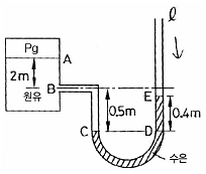
- 69.1kPa
- 101.3kPa
- 133.5kPa
- 175.8kPa
(정답률: 60%)
83. 가스의 절대습도가 0.1인 가스가 있다 가스 중에 존재하는 수분을 모두 흡수하기 위하여 실리카겔을 사용하고자 한다. 실리카겔 1kg당 수분 0.1kg을 흡수한다고 할 때 가스 1kg당 필요한 실리카겔의 양은?
- 0.091kg
- 0.1kg
- 0.91kg
- 1.0kg
(정답률: 58%)
84. 임펠러식 유량계의 특징에 대한 설명 중 옳지 않은 것은?
- 구조가 간단하고 보수가 용이하다.
- 직관 부분이 필요하다.
- 부식성이 강한 액체에도 사용할 수 있다.
- 측정정도는 ± 0.⑤%이다
(정답률: 56%)
85. 가스크로마토그래피에 의해 가스의 조성을 알고 있을 때에는 계산에 의해서 그 비중을 알 수 있다. 이때 비중계산과의 관계가 가장 먼 인자는?
- 성분의 함수비
- 분자량
- 수분
- 증발온도
(정답률: 58%)
86. 어느 연도의 가스 속도를 측정한 결과 15m/s이었다. 이때 피토관의 수주는 10mmH2O이었다 댐퍼를 열어 유속이 증가했을 때 수주가 20mmH2O이었을 때 이때의 유속은?
- 14.14 m/s
- 21.1m/s
- 22.5m/s
- 30m/s
(정답률: 59%)
87. 독성가스나 가연성가스 저장소에서 가스 누출로 인한 폭발 및 가스중독을 방지하기 위하여 현장에서 노출여부를 확인하는 방법으로 가장 거리가 먼 것은?
- 검지관법
- 시험지법
- 가스크로마토그래피법
- 가연성가스검출법
(정답률: 78%)
88. 전기로의 온도를 10℃/min의 속도로 올려서 로내의 온도를 500℃로 만들어 2시간 유지시킨 후 5℃/min의 속도로 온도를 내려서 상온에 도달시키고자 할 때 어떤 제어방법을 사용하는 것이 가장 좋은가?
- 정치제어
- 추종제어
- 캐스케이드제어
- 프로그램제어
(정답률: 60%)
89. 선팽창계수가 다음 두 종류의 금속을 맞대어 온도변화를 주면 휘어지는 것을 이용한 온도계는?
- 저항온도계
- 바이메탈온도계
- 열전대온도계
- 유리온도계
(정답률: 75%)
90. 가스미터에 의한 압력손실이 적어 사용 중 기압차의 변동이 거의 없어 유량이 정확하게 계랑 되는 계측기는?
- 막식가스미터
- 루츠미터
- 로터리피스톤식미터
- 습식가스미터
(정답률: 79%)
91. 시험지에 의한 가스검지법 중 연당지로 검지할 수 있는 가스는?
- COCl2
- CO
- H2S
- HCN
(정답률: 74%)
92. 그림과 같은 논리회로의 출력 Y를 옳게 나타낸 것은?
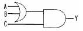
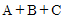
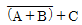
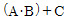
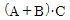
(정답률: 48%)
93. 가스계량기의 설치에 대한 설명 중 옳은 것은?
- 가스계량기는 화기와 1m 이상의 우회거리를 유지할 것
- 가스계량기의 설치높이는 바닥으로부터 1.6m이상 2m 이내에 수직 수평으로 설치할 것
- 가스계량기를 격납상자에 설치할 경우 바닥으로부터 1.8m 이상 2m 이내에 수직수평으로 설치할 것
- 가스계량기를 격납상자에 설치할 경우 바닥으로부터 1.0m 이내에 수직 수평으로 설치
(정답률: 87%)
94. 온도 25℃ 노점 19℃인 공기의 상대습도는 약 얼마인가? (단, 25℃ 및 19℃에서 포화증기압은 각각 23.76mmHg, 16.47mmHg로 한다.)
- 48%
- 58%
- 69%
- 79%
(정답률: 53%)
95. 전자유량계는 어떤 원리를 이용한 것인가?
- 옴의법칙
- 패러데이 전자유도법칙
- 제백효과
- 아르키메데스 원리
(정답률: 77%)
96. 어느 수용가에 설치되어 있는 가스미터의 기차를 측정하기 위하여 기준기로 지시량을 측정하였더니 150m2을 나타내었다. 그 결과 기차가 4%로 계산되었다면 이 가스미터의 지시량은 몇 m3인가?
- 149.96m3
- 150m3
- 156m3
- 156.25m3
(정답률: 56%)
97. 가스 농도가 경보 설정치에 도달한 후 그 농도 이상으로 계속해서 유지될 경우 일정시간 (20~60초) 경과 후에 경보를 발하는 검지기의 경보방식은?
- 즉시 경보형
- 지연 경보형
- 반시한 경보형
- 반사 경보형
(정답률: 67%)
98. 가스크로마토그래피 분석법에 사용되는 캐리어가스 중 가장 많이 사용하는 것은?
- 수소 아르곤
- 아르곤 질소
- 질소 헬륨
- 네온 헬륨
(정답률: 59%)
99. 차압식 유량계가 아닌 것은?
- 오리피스
- 벤튜리미터
- 플로노즐
- 피스톤식
(정답률: 77%)
100. 수소염이온화식가스검출기(FID)에 대한 설명 중 옳지 않은 것은?
- FID는 수소 불꽃 속에 탄화수소가 들어가면 불꽃의 전기전도도가 증대하는 현상을 이용한 것이다.
- 가스검지기로서의 검지감도는 가장 높고 원리적으로는 1ppm의 가스농도의 검지가 가능하다.
- FID에 의한 탄화수소의 상대 감도는 탄소수에 거의 반비례한다.
- 구성요소로는 시료가스, 노즐, 컬렉터전극, 증촉부, 농도지시계 등이 있다.
(정답률: 73%)